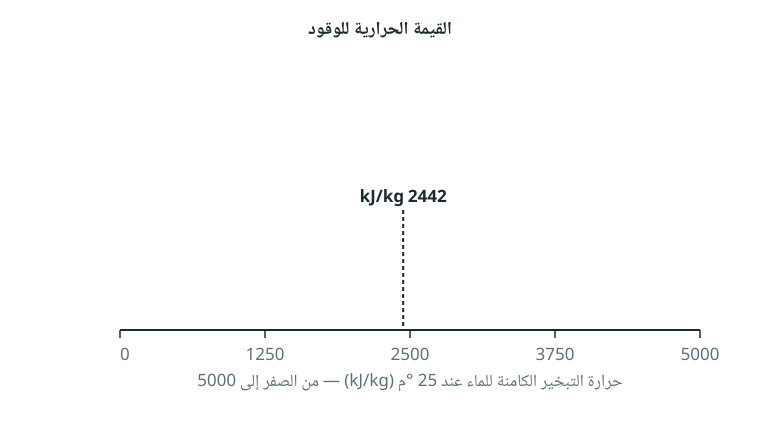

القيمة الحرارية للوقود
Calorific value
القيمة الحرارية هي كمية الحرارة المنطلقة عند الاحتراق الكامل لوحدة كتلة أو حجم من الوقود، وتُفرَّق إلى قيمة عليا تشمل حرارة تكثّف البخار وقيمة دنيا لا تشملها.
القيمة الحرارية للوقود هي الطاقة المنطلقة كحرارة عند احتراقه احتراقاً كاملاً، وتُقاس عادة بالميغاجول لكل كيلوغرام للوقود الصلب والسائل، أو لكل متر مكعب نظامي للغازات. وتُفرَّق قيمتان: القيمة الحرارية العليا (HHV) تُقاس والناتج مبرَّد حتى يعود بخار الماء المتكوّن إلى الحالة السائلة، فتشمل حرارة التكثّف؛ والقيمة الحرارية الدنيا (LHV) تُقاس والناتج غازي، فلا تشمل تلك الحرارة. الفرق بينهما يساوي كتلة الماء المتكوّن مضروبة في حرارة التبخير الكامنة. مثال: الميثان له HHV = 55.5 MJ/kg وLHV = 50.0 MJ/kg، والفرق 5.5 MJ/kg يوافق تكثّف 2.25 kg ماء لكل كيلوغرام ميثان.
كيف تعمل الظاهرة؟
الطاقة المنطلقة في الاحتراق هي فرق المحتوى الحراري بين المتفاعلات والنواتج. في احتراق هيدروكربون، يتحد الهيدروجين مع الأكسجين مكوّناً ماء، ويتحد الكربون مكوّناً ثاني أكسيد الكربون، وكلتا الرابطتين الجديدتين أقوى من الروابط المكسورة، فالفرق ينطلق حرارة. والماء الناتج يخرج بخاراً عند درجة حرارة الاحتراق، فإذا بُرِّد الناتج إلى ما دون نقطة تكثّفه، تحرّرت أيضاً حرارة التكثّف. هذا هو الفرق الوحيد بين HHV وLHV: كمية الماء المتكوّن مضروبة في حرارة التبخير. ولذلك يكون الفرق أكبر في الوقود الغني بالهيدروجين، كالميثان، وأصغر في الفحم الذي هيدروجينه قليل.
العلاقة بالأرقام
HHV = LHV + m_H2O·h_fg، حيث m_H2O كتلة الماء المتكوّن لكل وحدة كتلة وقود. ولميثان CH₄: m_H2O = 2 × 18.015/16.043 = 2.246 kg/kg، وh_fg = 2.4417 MJ/kg عند 25 °م، فالفرق 5.48 MJ/kg. وبقيم اصطلاحية معلنة: HHV = 55.5 MJ/kg وLHV = 50.0 MJ/kg. وللغاز الطبيعي يُعبَّر عنها حجمياً: نحو 39.8 MJ/m³ نظامي (LHV). والكفاءة على أساس LHV أعلى رقمياً من الكفاءة على أساس HHV بالوقود نفسه.
مفاهيم متقاربة
يُفرَّق بين HHV وLHV بدقة: الأولى تفترض تكثّف الماء الناتج، والثانية تفترض بقاءه بخاراً. في المراجل المكثّفة يُستفاد من حرارة التكثّف فتُحسب الكفاءة على أساس HHV وقد تتجاوز 100% على أساس LHV — وهذا ليس خرقاً للديناميكا الحرارية بل اختلاف في مرجع الحساب. ويُفرَّق بين القيمة الحرارية وحرارة الاحتراق الأدياباتية: الثانية درجة حرارة، والأولى طاقة. ويُفرَّق بين القيمة الحرارية الحجمية والكتلية: الأولى تعتمد على الكثافة، فغاز طبيعي أخف يعطي قيمة حجمية أقل بقيمة كتلية واحدة.
حدود التطبيق
القيمة الحرارية تفترض احتراقاً كاملاً، وهو لا يحدث في الواقع: يخرج بعض الوقود غير محترق كأول أكسيد الكربون أو هيدروكربونات غير محترقة، فالحرارة الفعلية أقل. وتفترض أيضاً أن الوقود محدد التركيب، والوقود التجاري خليط متغير التركيب، فقيمته تتغير من شحنة إلى أخرى ويجب قياسها لا افتراضها. ولا تصف القيمة الحرارية معدل انطلاق الحرارة بل مقدارها الكلي؛ المعدل يعتمد على حركية الاحتراق والخلط. وأخيراً لا تُقارن قيم الوقود الغازي بالكتلية بلا تحديد الظروف النظامية، لأن حجم الغاز يتغير بالضغط والحرارة.

| الكمية | القيمة | المصدر |
|---|---|---|
| حرارة التبخير الكامنة للماء عند 25 °م | 2441.7 kJ/kg | [1] |
| الفرق HHV−LHV للميثان | 5.48 MJ/kg | [1] |
المصادر
- 1 NISTIR 5078 — Thermodynamic Properties of Water, 0 to 374 C and Pressures to 100 MPa (IAPWS-95 tabulation) — NIST — National Institute of Standards and Technology (1998). www.nist.gov/publications/thermodynamic-properties-water-temperatures-0-374-c-and-pressures-100-mpa · اطُّلع عليه 2026-11-21
- 2 CODATA Value: Avogadro constant — NIST — CODATA 2022 recommended values (2024). physics.nist.gov/cgi-bin/cuu/Value?na · اطُّلع عليه 2026-11-21
- 3 CODATA Value: molar gas constant — NIST — CODATA 2022 recommended values (2024). physics.nist.gov/cgi-bin/cuu/Value?r · اطُّلع عليه 2026-11-21
استشهد بهذا المصطلح
الصيغتان مبنيتان من بيانات الصفحة نفسها: العنوان والتاريخ ورابط النسخة المنشورة.
القيمة الحرارية للوقود — Calorific value. (2026). ديوان المعرفة — انفراد. https://infiradev.com/diwan/terms/term-calorific-value.html
@misc{term-calorific-value2026,
title = {القيمة الحرارية للوقود},
titleaddon = {Calorific value},
howpublished = {{ديوان المعرفة — انفراد} — مرجع علمي عربي},
year = {2026},
url = {https://infiradev.com/diwan/terms/term-calorific-value.html},
urldate = {2026-11-26},
note = {مراجعة علمية: hermes (مراجعة معتمدة 2026-11-26)}
}
راجعه: hermes (مراجعة معتمدة 2026-11-26) · 2026-11-26 · آخر تحديث 2026-11-21